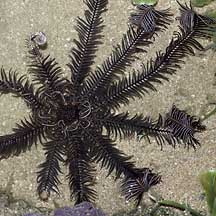
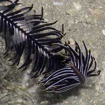
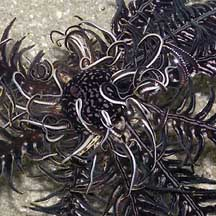
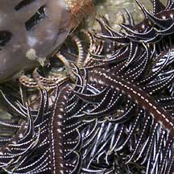
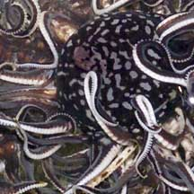
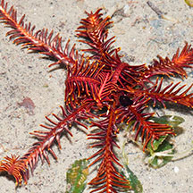
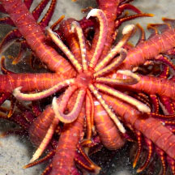
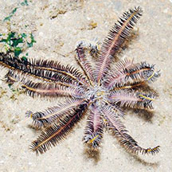
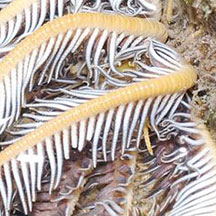

|
|
| crinoids text index | photo index |
| Phylum Echinodermata > Class Crinoidea > Order Comatulida |
| 10-armed
feather star awaiting identification updated Mar 2020 Where seen? This large 10-armed feather star is sometimes seen on rubbly areas. Features: About 15cm in diameter with 10 thick arms. The oral disk is bulbous and surrounded by short structures (pinnules) that are tipped with combs to keep the disk clean. It has several hooked structures (cirri) on the underside that form a 'claw' that the animal uses to cling to things. Usually purple but sometimes also red or brown. Large feather stars with 12 arms are also included in this fact sheet. |
 Chek Jawa, Jun 05 |
 |
 |
|
|
 Clinging onto a sponge with the cirri. |
 The pinnules near the oral disk have combs on their tips to help clean the oral disk. |
| Purple feather stars on Singapore shores |
On wildsingapore
flickr
|
| Other sightings on Singapore shores |
 Changi, Jun 16 |
 |
 Pulau Semakau, Aug 11 |
 |
|
shared by Neo Mei Lin on her blog |
|
Links
References
|